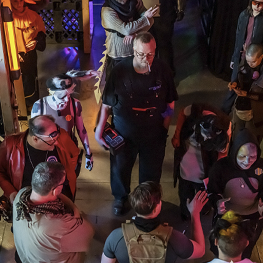
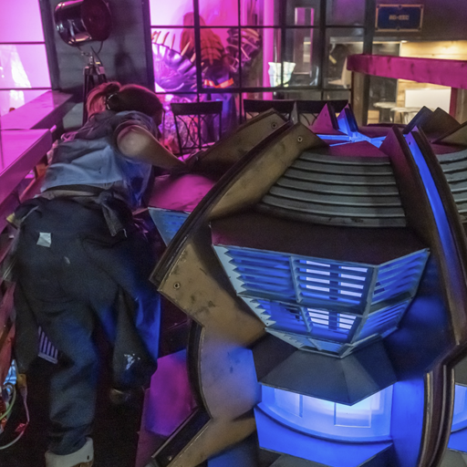

I can think of several LARPing organizations in Southern Ontario, and very few of them are anything outside of Fantasy in terms of genre. While this can have a few advantages, such as having costuming that can translate easily from one game to another or knowing some expectations that emerge from that genre, many LARPs eventually become stagnant and same-y. This has left the LARP scene somewhat stagnant in what is available for those who want more than elves and dragons in their experiences.
Enter Empire 6, a sci-fi LARP taking place in the cold dark vastness of space. It's a game about survival of not only yourself, but of your civilization immediately after its collapse. The game currently takes place on a space ship built as a civilian cruise ship. The Empire has run out of Feroxidite, the substance that allows for Faster-Than-Light travel, and all citizens are to board any ship they can to whatever final destination that ship is going to.
The first playtest event was held last October had a surprising turn-out for a first-time LARP with nearly fifty participants. After the logistics process and opening speeches detailing safety and the lines and veils of the game, the game begins with the announcement that the FTL drive has not only malfunctioned, it has fallen off. As the event progresses, it's found that one of the NPC crew has betrayed the ship to pirates who have stolen the ship's supply of Feroxidite. This leads to a debate among the players as to what to do with the treacherous crew member.
The event was filled with great costumes and props, great moments of roleplay, and things to do. The event did feel stalled at times, and while the event ended early due to issues with the venue owners, I think this as a boon for the event as a whole. The character I played was a doctor and while I was able to do things like treat injuries, there wasn't a lot to do between those times.
Overall, for a first event of a LARP finding its footing, Empire 6 is looking to be a great LARP that is able to stand out from its competitors across Southern Ontario. It has ambitions to have a completely indoor venue of its own in the future in a more centralized location in the GTA making it a great option for those who can't travel far from the city. Despite the crisis in their fictional empire, Empire 6's future looks bright.